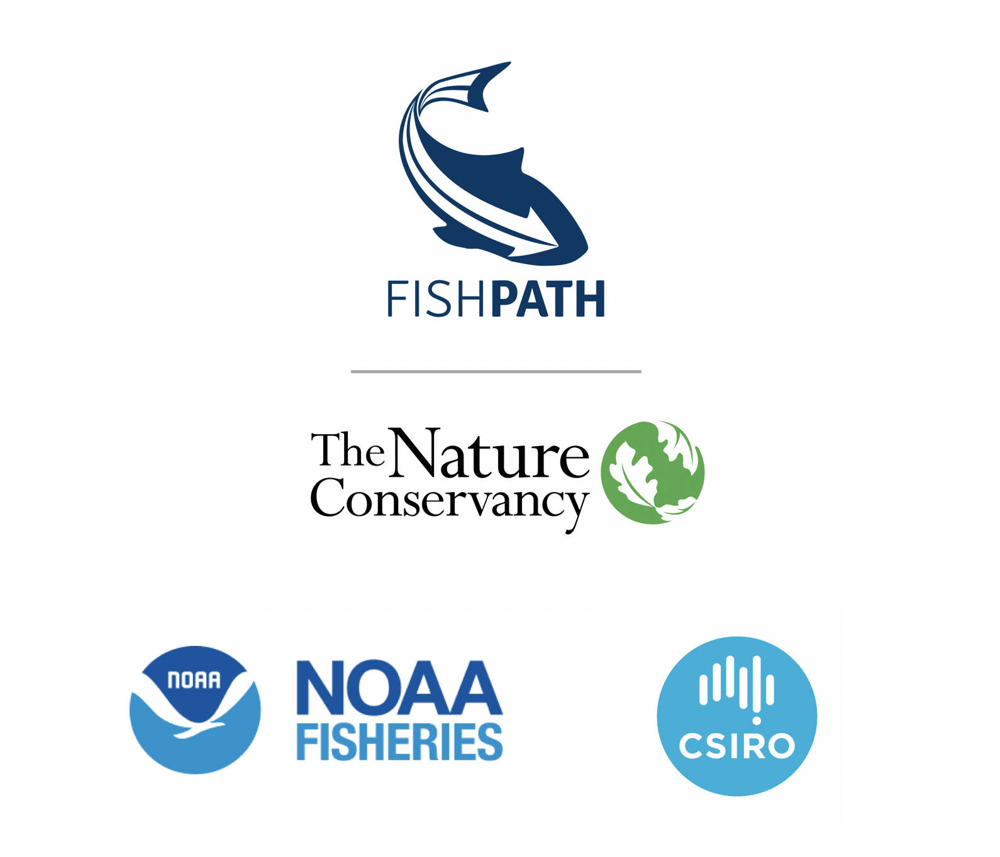

FishPath Tool User Guide
Introducción
Motivación para desarrollar la herramienta FishPath y el proceso requerido para el uso de esta herramienta
Visión general de la herramienta FishPath
Propósito y la audiencia de la guía de uso para la herramienta FishPath
Iniciar la herramienta FishPath
Página de Bienvenida
Crear una cuenta FishPath
Tablero de la herramienta FishPath
Añadir una pesquería
Cuestionario de la herramienta FishPath
Anatomía de una pregunta dentro de la herramienta FishPath
Preguntas de “Criterio” o “Advertencia”
Preguntas subjetivas
Completar el cuestionario
Marco conceptual de la herramienta FishPath
Herramienta FishPath: Visión general del marco conceptual y sus 3 secciones
Página interactiva de Resultados de la herramienta FishPath
Cuadro interactivo de resultados
Estructura de la tabla
Detalles completos de las opciones
Mostrar opciones escondidas y ordenar opciones
Preguntas marcadas y respuestas influyentes
Preguntas marcadas
Preguntas influyentes
Ver todas las respuestas
Proceso para reducir el número de resultados
Acciones para compartir resultados y editar información de la pesquería
Modo de solo visualización (Pesquería compartida)
Appendix
FishPath Tool Frequently Asked Questions (FAQs)
FishPath Tool Terms of Service
Glossary
Absolute Abundance
B0 (Virgin Biomass)
Bias
Biological Overfishing
Boom and Bust Population Cycle
Bycatch
Capital Stuffing
Carrying Capacity (K)
Catch-Per-Unit-Effort (CPUE)
Decision Rule
Determinate Growth
Economic Overfishing
Ecosystem Overfishing
Effort Creep
Equilibrium
Fecundity
Fishery
Fishery-Dependent Data
Fishery-Independent Data
Fishery Effort
Fishing Mortality (F)
Growth Overfishing
Harvest Control Rule (HCR)
Harvest Strategy
Illegal, unregulated, and unreported (IUU) Fishing
Indicators
Intrinsic growth rate (r)
Latent effort
Length-weight relationship
Limit reference point
Management Strategy
Maturity ogive
Maximum sustainable yield (MSY)
Multispecies fishery
Natural mortality (M)
No-take reserve
Nursery
Open Access
Overfished
Overfishing
Periodic strategist
Recruitment
Recruitment Overfishing
Reference Points
Relative abundance
Removals
Sector/Fleet
Selectivity
Sessile
Steepness
Stock
Stock Abundance
Stock Status
Target reference point
Transboundary
Trigger reference point
Published with bookdown
Guía de usuario para utilizar la herramienta FishPath
Guía de usuario para utilizar la herramienta FishPath
The Nature Conservancy
Última actualización: April 30, 2021
